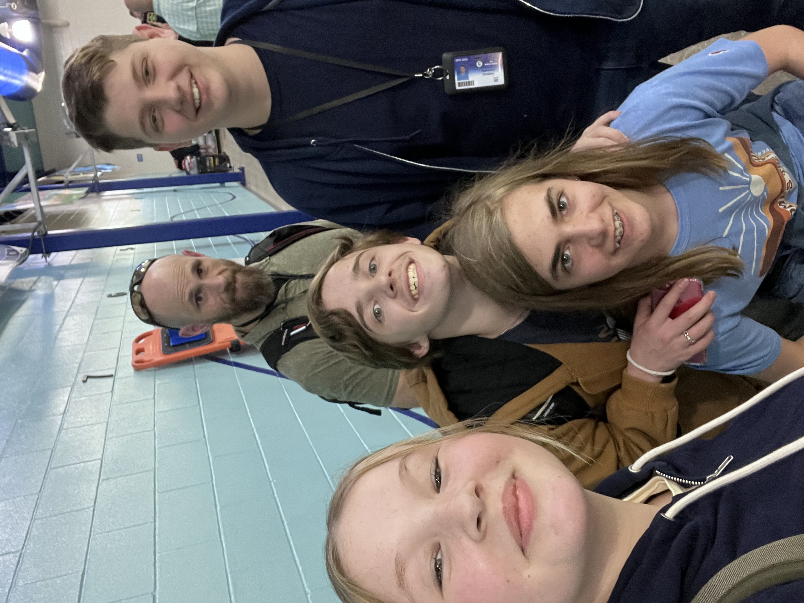
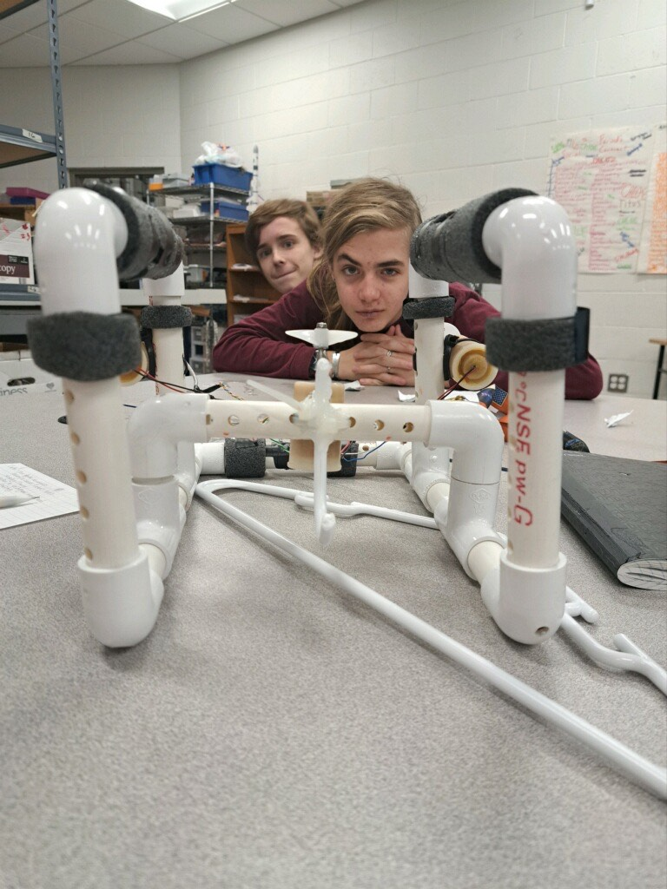
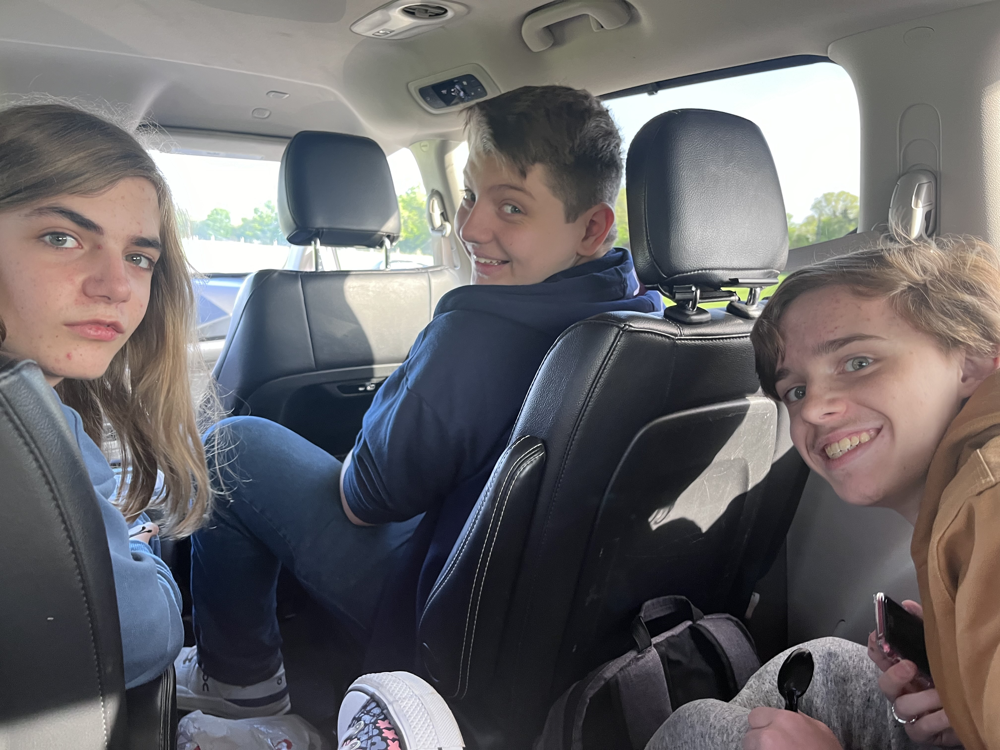

We are a team competing in the national SeaPerch competition on May 31-June 1. Our team is from Bryan Texas. Our team members are Eloise Barton, Beau Dockery, Luke Odeski, and Graer Styne. Our advisor is David Baldridge
Our ROV's name is Jerressica. We originally built her for a class project,but our teacher selected our team to go to the regional SeaPerch competition. At regionals, we got 1st place and moved on to nationals
We love SeaPerch because of the challenges we have had to overcome. While Working on our robot we have experienced multiple trials and roadblocks that we have had to overcome. Roadblocks such as, motor failure, disagreements, distractions and much more. These challenges teach us how to adapt and be flexible. We also love SeaPerch because of the things we have got to experience. We all have had so much fun building our robot and going to events like the regional competition. I am sure that we are all looking forward to nationals in the summer.
